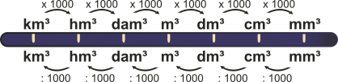

Calculadora de conversão - medidas de volume
Faça os seus calculos de conversão de volume de forma simples e fácil com a calculadora de conversão. Escolha a unidade desejada e a unidade de conversão, ou seja, para qual unidade deseja converter. 😊
Escolha um valor
- milímetro(s) cúbico(s) (mm³)
- centímetro(s) cúbico(s) (cm³)
- decímetro(s) cúbico(s) (dm³)
- metro(s) cúbico(s) (m³)
- decâmetro(s) cúbico(s) (dam³)
- hectômetro(s) cúbico(s) (hm³)
- quilômetro(s) cúbico(s) (km³)
Resumo - Medidas de volume
Podemos encontrar a volume de um sólido geométrico apartir das três dimensões:
comprimento, altura e largura. Para calcular o
volume desse sólido, basta multiplicar ambas as propriedades.
Para a conversão de uma medida de volume para outra, é preciso multiplicar (se for converter para
uma unidade maior que a atual) ou dividir (se for converter para uma unidade menor) por 1.000 (10³).
